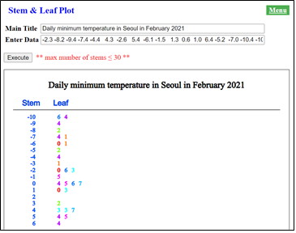
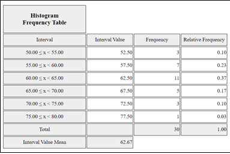
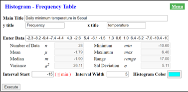
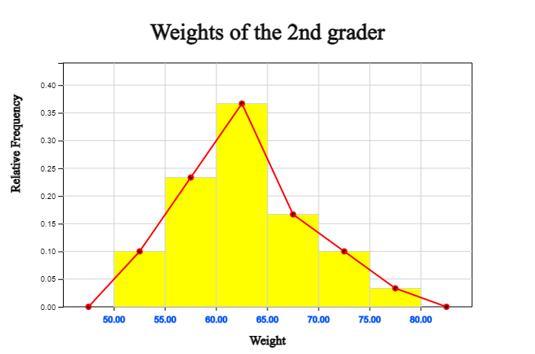
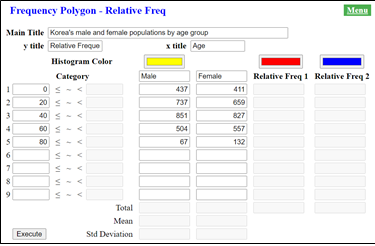
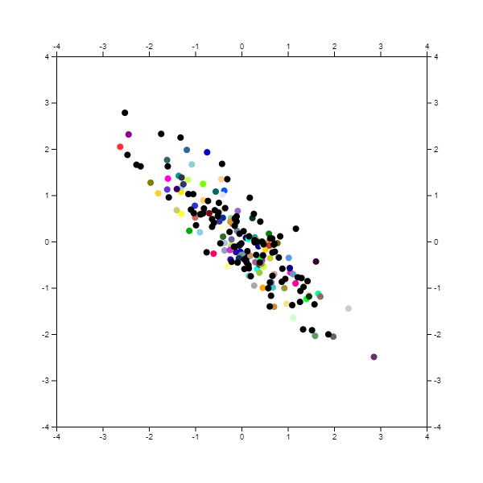

⭐ Think |
Fine dust occurs frequently these days in Seoul and causes inconvenience to our daily life. The following dare are the fine dust concentration in Seoul in February, 2021. How many days in February were the fine dust severe?
(Data 3.1)Fine dust concentration in Seoul, February 2021 (㎍/\(m^3\))
|
|
üíé Explore |
1) There are 28 data on fine dust concentration, how can we easily
express the overall distribution of data?
2) When the fine dust concentration exceeds 36 (㎍/), it is evaluated
as 'bad'. How many ‘bad’ days are in February?
|
Chapter 3. Visualization of Quantitative Data
üåø üìà3.1 Stem and Leaf Plot3.2 Histogram ‚Äì Frequency Table |
In the case of quantitative data, the following graphs are drawn and analyzed.
- Stem and leaf drawing In the case of two quantitative variables, a scatter plot is used to analyze their relation. |
3.1 Stem and Leaf Plot
In the above example data, the fine dust concentration was measured as 39, 18, 20 ... etc. The data expressed as a quantity in this way is called a quantitative variable.
Since numerical data such as (Data 3.1) use the decimal system, data corresponding to each ten’s digit can be collected and organized as in the following table. That is, the first data 39 has a ten’s digit of ‘3’, so write this data in the third row, and write the next 18 in the first row because the ten’s digit is ‘1’. [Table 3.1] shows all data organized in the same way.
[Table 3.1] Fine dust concentration data organized on ten’s digit
| Ten's digit | Data |
|---|---|
| 1 | 18 16 18 16 15 13 17 18 11 14 |
| 2 | 20 22 23 24 25 24 |
| 3 | 39 37 30 34 |
| 4 | 44 42 46 |
| 5 | 59 53 |
| 6 | |
| 7 | 76 77 76 |
In [Table 3.1], if x denotes the fine dust concentration, each row (with ten’s digit) means intervals such as ‘10 x 20㎍/\(m^3\), ‘20 x 30㎍/\(m^3\), ... ‘70 x 80㎍/\(m^3\). [Table 3.2] in which only one last digit of the data shown in each row is arranged in ascending order, is called a stem and leaf plot. In the stem and leaf plot, the ten’s digit number is called the ‘stem’ of a tree, and the single digit number is called the ‘leaf’.
[Table 3.2] Fine dust concentration data in which the last digit of the data shown in each row is arranged in ascending order,
| Ten's digit | Data |
|---|---|
| 1 | 1 3 4 5 6 6 7 8 8 8 |
| 2 | 0 2 3 4 4 5 |
| 3 | 0 4 7 9 |
| 4 | 2 4 6 |
| 5 | 3 9 |
| 6 | |
| 7 | 6 6 7 |
Observing the stem and leaf plot such as in [Table 3.2], it is easy to see that the most frequent days when the concentration of fine dust is ‘10 x 20㎍/\(m^3\), followed by ‘20 x 30㎍/\(m^3\). Since the data are sorted in ascending order, it is easy to count the days when the fine dust concentration is 'bad', which is 36 ㎍/\(m^3\) or higher. Out of 28 days, the level of fine dust concentration was 'bad' for 10 days, so it can be seen that this is a serious pollution problem.
When there are a lot of data, it is time-consuming and not easy to draw a stem and leaf plot by hand like this. Let's draw a stem and leaf plot using 『eStatM』 software.
üé≤ Practice 3.1
Let's draw a stem and leaf plot for the fine dust concentration data (Data 3.1).Solution
Enter the fine dust concentration data in ‘Data input’ as in <Figure 3.1> (you can copy and paste the data from the e-book) and enter a title you want in ‘Main Title’.
If you click the [Execute] button, the stem and leaf plot as shown in <Figure 3.1> appears.
| Main Title | |
| Data Input |
** max number of stems ≤ 30 **
<Figure 3.1> Stem and leaf plof of fine dust concentration data
For data with more than three digits or a decimal point, you can draw stems and leaves with the last digit as the leaf and the numbers before it as the stem.
üé≤ Practice 3.2
The daily minimum temperature in Seoul in February is listed as follows:
(Data 3.2) Daily minimum temperature in Seoul in
February 2021(unit degree in Celsius)
|
-2.3 -8.2 -9.4 -7.4 -4.4 4.3 -2.6 5.4 -6.1 -1.5
1.3 0.6 1.0 6.4 -5.2 -7.0 -10.4 -10.6 -7.1 5.5 4.7 0.4 -3.1 -3.0 0.7 0.5 4.3 3.2 |
Draw a stem and leaf plot for the daily minimum temperature.
Solution
|

<Figure 3.2> Stem and leaf plot of the daily minimum temperature data in Seoul
|
Enter the daily minimum temperature data in 'Data input' as in <Figure 3.2> and the
title you want in 'Main Title'.
If you click the [Execute] button, a stem and leaf plot as shown in <Figure 3.2> appears. Temperature data have decimal points and negative numbers, so the stem and leaf plot used the last digit number as a leaf. |
⏱ Exercise 3.1 |
The following is data on the length of bicycle-only roads by 25 administrative districts in Seoul as of 2019. Draw a stem and leaf plot using 『eStatM』 and analyze it.
(Data 3.3) Length of bicycle-only roads by 25 administrative districts in Seoul in 2019 (unit km)
|
⏱ Exercise 3.2 |
The following is data on the maximum wind speed of typhoons that passed
through Korea in 2020.
(Data 3.4) Maximum wind speed of typhoons that passed through Korea in 2020.(unit m/sec)
|
3.2 Histogram – Frequency Table
⭐ Think |
The data on the weight of 2nd year middle school students is as follows:
(Data 3.5) Weight of middle school students (unit kg)
|
|
üíé Explore |
1) If there are 30 data, how can we easily express the distribution of students' weight in a graph?
2) How many students weigh between 70kg and 75kg?
|
In order to see the overall distribution of weight data as above, you can think of a stem and leaf plot discussed in the previous section. However, since there are only number 5, 6, and 7 on ten’s digit, it might be difficult to examine the detailed distribution with the stem and leaf plot. Also, it is not easy to determine the number of students weighing between 70kg and 75kg. In order to know the overall distribution or specific information from the data, it is necessary to properly organize the data.
[Table 3.3] is a summary of the weight data starting at 50kg, dividing the intervals with 5kg width, and organizing the weights of students in each interval. Stem and leaf plot can be useful for organizing these data.
[Table 3.3] Weight of middle school students organized by intervals with 5kg width
| Weight (kg) | Data | Number of data |
|---|---|---|
| 50 ≤ ~ <55 | 53 53 54 | 3 |
| 55 ~ 60 | 55 57 58 58 58 58 59 | 7 |
| 60 ~ 65 | 60 61 61 61 62 62 62 63 63 63 64 | 11 |
| 65 ~ 70 | 65 66 67 68 68 | 5 |
| 70 ~ 75 | 70 70 72 | 3 |
| 75 ~ 80 | 76 | 1 |
Using the table organized as shown in [Table 3.3], it is easy to see that the number of students whose weights are between 60kg and 65kg is the highest, followed by students between 55kg and 60kg. And it can be immediately seen that the number of students whose weights are between 70kg and 75kg is three.
The intervals of the weight variable as shown in [Table 3.3] are called classes, the width of the interval is called a class width (or size), and the number of data belonging to each class is called a frequency. [Table 3.4] is a frequency table of students' weight.
[Table 3.4] Weight of middle school students organized by intervals with 5kg width
| Class | Frequency |
|---|---|
| 50 ≤ ~ <55 | 3 |
| 55 ~ 60 | 7 |
| 60 ~ 65 | 11 |
| 65 ~ 70 | 5 |
| 70 ~ 75 | 3 |
| 75 ~ 80 | 1 |
| Total | 30 |
As a value representing each class, the middle value of both ends of each class is used and called the class value of that class.
Class value = (Addition of end values) / 2
For example, in the frequency table of [Table 3.4], the class value of the interval between 50kg and 55kg are as follows:
Class value of ‚Äò50 ≤ ~ <55‚Äô = (50 + 55) / 2 = 52.5(kg)
By comparing the frequency of each class in the frequency table, the overall data distribution can be observed. However, it may be better to calculate the ratio of the frequency of each class to the total frequency. The ratio of the frequency of each class to the total frequency is called the relative frequency of that class.
Relative frequency of a class = \(\frac{frequency \, of \, class}{total \, frequency}\)
[Table 3.5] is a variation of the frequency table in which class values and relative frequencies are displayed.
[Table 3.5] Frequency table with class value and relative frequency
| Class(kg) | Class value | Frequency | Relative frequency |
|---|---|---|---|
| 50 ≤ ~ <55 | 52.5 | 0.10 | 3 |
| 55 ~ 60 | 57.5 | 0.23 | 7 |
| 60 ~ 65 | 62.5 | 0.37 | 11 |
| 65 ~ 70 | 67.5 | 0.17 | 5 |
| 70 ~ 75 | 72.5 | 0.10 | 3 |
| 75 ~ 80 | 77.5 | 0.03 | 1 |
| Total | 30 | 1.00 |
The above frequency table can be graphed in the following order, which is called a histogram. <Figure 3.3> is a histogram of students' weight.
① Write the end value of each class on the horizontal axis.
② Write the frequency on the vertical axis.
③ In each class, draw a rectangle with the width of the class horizontally and the frequency vertically.

<Figure 3.3> Histogram of students’ weights data
Classes in the frequency table can be made in various ways depending on the width of the class determined by the analyst. The frequency table made with the weight data of students in (Data 3.5) with a class width of 10kg is shown in the following table. This frequency table is a table to draw the stem and leaf plot which uses 10-digit numbers.
[Table 3.6] Frequency table with 10kg class size
| Class (kg) | Frequency |
|---|---|
| 50 ≤ ~ <55 | 10 |
| 60 ~ 66 | 16 |
| 70 ~ 75 | 4 |
| Total | 30 |
When there are a lot of data, it is time-consuming and not easy to draw the frequency table and histogram manually as above. Let's draw a frequency table and histogram using 『eStatM』 software.
üé≤ Practice 3.3
Let's draw a histogram of the weight of 2nd grader students (Data 3.5) and find out the frequency table.Solution
Enter students' weight data in 'Data input' (you can copy and paste the data from the e-book) and enter the title you want in 'Main Title'.
Click the [Execute] button to draw a histogram as shown in <Figure 3.5>.
| Main Title | |||
| y title | x title | ||
| 자료 | |||||||
| Data Size | n | min | |||||
| Mean | μ | max | |||||
| m | range | ||||||
| Variance | σ2 | Standard Deviation | σ | ||||
| Interval Start = | ( ≤ min ) | Interval Width = | Histogram Color |
<Figure 3.4> Data input for a histogram
|
If you check ‘frequency’ in the options under the histogram, the frequency of each class is displayed on the histogram bar as shown in <Figure 3.5&gr;. |

<Figure 3.5> Histogram with class frequency
|
|
If you click the ‘Frequency Table’ button in the options under the histogram, the frequency table of the histogram is displayed as shown in <Figure 3.6>. |

<Figure 3.6> Frequency table of the hisogram
|
The class interval of the frequency table is determined by the analyst by looking at the minimum
and maximum values of the data.
üé≤ Practice 3.4
Let's draw a histogram of the daily minimum temperature ([Practice 3.2]) in Seoul in February using 『eStatM』 (Data 3.2).
(Data 3.2) Daily minimum temperature in Seoul in
February 2021(unit degree in Celsius)
|
-2.3 -8.2 -9.4 -7.4 -4.4 4.3 -2.6 5.4 -6.1 -1.5
1.3 0.6 1.0 6.4 -5.2 -7.0 -10.4 -10.6 -7.1 5.5 4.7 0.4 -3.1 -3.0 0.7 0.5 4.3 3.2 |
Solution
| If you enter the daily minimum temperature data in 'Data input' (you can copy and paste the data from the e-book), as shown in <Figure 3.7>, system shows that the number of data is 28 immediately, the minimum value is -10.6 degrees, and the maximum value is 6.4 degrees. You can use this information to determine the interval start and interval width. Here, the interval start is set to -15 and the interval width is set to 5 degrees. |

<Figure 3.7> Temperature data input for a histogram
|
| Enter the desired title and click the [Execute] button to display the histogram as shown in <Figure 3.8>. |

<Figure 3.8> Histogram of daily minimum temperature in Seoul
|
| If you click the ‘Frequency Table’ button in the options under the histogram, the frequency table of the histogram is displayed as shown in <Figure 3.9>. |

<Figure 3.9> Frequency table of the histogram
|
⏱ Exercise 3.3
|
The following is data on the length of bicycle-only roads by 25 administrative districts in Seoul as of 2019 ([Exercise 3.1]). Create and analyze histogram and frequency tables using 『eStatM』.
(Data 3.3) Length of bicycle-only roads by 25 administrative districts in Seoul (unit km)
|
⏱ Exercise 3.4
|
The following is data on the maximum wind speed of typhoons that passed through Korea in 2020 ([Exercise 3.2]). Create and analyze histogram and frequency table using 『eStatM』.
(Data 3.4) Maximum wind speed of typhoons that passed through Korea in 2020. (unit m/sec)
|
3.3 Frequency Distribution Polygon – Relative Frequency
⭐ Think |
The frequency table surveying the weights of the 2nd and 3rd grader students at a middle school is as follows:
[Table 3.7] Frequency table surveying the weights of the 2nd and 3rd grader students at a middle school.
|
||||||||||||||||||||||||
üíé Explore |
1) The number of 2nd grader students is 30 and the number of 3rd grader students is 40.
How can we compare the distribution of weight between 2nd and 3rd graders?
2) Where is the interval where the weight of 3rd grader students is relatively larger
than the 2nd grader students?
|
In the frequency table above, it is not appropriate to directly compare the frequency of the 2nd and 3rd grader students because total number of students in each grade are different. In this case, as shown in [Table 3.8], the relative frequency of each class in both grades can be calculated for comparison.
[Table 3.8] Frequency table with relative frequency surveying the weights of the 2nd and 3rd grader students at a middle school.
| Class(kg) | 2nd Grader | 3rd Grader | 2학년 상대도수 | 3학년 상대도수 |
|---|---|---|---|---|
| 50≤ ~ <55 | 3 | 2 | 0.097 | 0.050 |
| 55 ~ 60 | 7 | 6 | 0.226 | 0.100 |
| 60 ~ 65 | 11 | 12 | 0.355 | 0.300 |
| 65 ~ 70 | 5 | 13 | 0.194 | 0.325 |
| 70 ~ 75 | 3 | 6 | 0.097 | 0.150 |
| 75 ~ 80 | 1 | 3 | 0.032 | 0.075 |
| Total | 30 | 40 | 1.000 | 1.000 |
Looking at this table, it can be seen that the relative frequency of the 3rd grader students is higher than that of the 2nd grader students in the case of classes ‘65 ∼ 70’, ‘70 ∼ 75’, and ‘75 ∼ 80’.
Using a histogram, a line graph that draws a line for the frequency of each class is called a frequency distribution polygon. How to draw a frequency distribution polygon is as follows:
① Place a dot in the center of the upper side of each rectangle of the histogram.
② Assume that there is one class with a frequency of 0 at both ends of the histogram and put a dot in the middle.
③ Connect the points taken above with a line.
A histogram is generally drawn using the frequency of each class, but it can be drawn also using the relative frequency. The method of drawing is the same as it is just using the relative frequency instead of the frequency. The frequency distribution polygon can be drawn using either the frequency or the relative frequency. As shown in [Table 3.8], when comparing the frequency distribution for two groups of the 2nd and 3rd graders, the number of data in each group may be different, so two frequency distribution polygons using the relative frequencies are used for comparison.
<Figure 3.10> is a histogram and frequency distribution polygon using the relative frequency by class of the weights of the second graders in [Table 3.7].

<Figure 3.10> Histogram and frequency distribution polygon using the relative frequency of each class interval
<Figure 3.11> compares the frequency distribution polygons using the relative frequencies for each class of 2nd and 3rd grader students.

<Figure 3.11> Frequency distribution polygons using the relative frequencies for each class of 2nd and 3rd grader students
When there are a lot of data, it is time-consuming and not easy to draw the frequency distribution table and histogram manually as above. Let's draw a frequency distribution table and histogram using 『eStatM』 software.
üé≤ Practice 3.5
Using 『eStatM』, draw a histogram and frequency distribution polygon for the weights of the 2nd and 3rd grader students in [Table 3.8].Solution
After entering the desired title, input the left value of each class as shown in the figure, then enter the name of 'Frequency 1' as '2nd Grader' and frequencies in the below column. If you click the [Execute] button, the histogram and frequency distribution polygon of the 2nd grader students are drawn as shown in <Figure 3.10>.
Next, enter the main title, x axis title, name and frequencies of the 3rd grader students as shown in <Figure 3.12>. Click the [Execute] button to draw a frequency distribution polygon for the weights of 2nd and 3rd grader students as shown in <Figure 3.11>.
| Main Title | ||||
| y title | x title | |||
| Histogram Color | |||||||||||
| Category | Rel Freq1 | Rel Freq2 | |||||||||
| 1 | ≤ ~ < | ||||||||||
| 2 | ≤ ~ < | ||||||||||
| 3 | ≤ ~ < | ||||||||||
| 4 | ≤ ~ < | ||||||||||
| 5 | ≤ ~ < | ||||||||||
| 6 | ≤ ~ < | ||||||||||
| 7 | ≤ ~ < | ||||||||||
| 8 | ≤ ~ < | ||||||||||
| 9 | ≤ ~ < | ||||||||||
| Sum | |||||||||||
| Mean | |||||||||||
| Variance | |||||||||||
| Std. Deviation | |||||||||||
<Figure 3.12> Data input of the weights of the 2nd grader
<Figure 3.13> Frequency distribution polygons using the relative frequencies of the 2nd grader and 3rd grader
üé≤ Practice 3.6
The following table shows Korea's male and female populations by age group in 2021. Use 『eStatM』 to draw and compare the frequency distribution polygons for each gender.
[Table 3.8] Korea's male and female populations by age group in 2021 (unit: 10,000)
| Class(kg) | Male | Female |
|---|---|---|
| 0≤ ~ <20 | 437 | 411 |
| 20 ~ 40 | 737 | 659 |
| 40 ~ 60 | 851 | 827 |
| 60 ~ 80 | 504 | 557 |
| 80 ~ 100 | 67 | 132 |
| Total | 2596 | 2586 |
Solution
|
Using the QR on the left, select 'Frequency Distribution Polygon - Relative Frequency' from the 『eStatM』 menu, then a window like <Figure 3.14> appears. After entering the desired title, input the left value of the class interval as shown in the figure, then enter ‘Male’ in the 'Frequency 1' column and ‘Female’ in the 'Frequency 2' column. |

<Figure 3.14> Male and female population data input for frequency distribution polygons
If you click the [Execute] button, a frequency distribution polygon for each gender is drawn as shown in <Figure 3.15>. It is easy to see that the population of male is higher than that of female until the age of 60, but that the population of female over the age of 60 is larger than that of male.

<Figure 3.15> Frequency distribution polygons of male and female populations in Korea
⏱ Exercise 3.5
|
The following table is a survey of the ages of male and female teachers in a middle school. Draw a frequency distribution polygon using 『eStatM』 and compare them.
[Table 3.9] Frequency table of the ages of male and female teachers
|
⏱ Exercise 3.6
|
The following table compares the academic achievement test scores of the middle school A and middle school B. Draw a frequency distribution polygon using 『eStatM』 and compare them.
[Table 3.10] Frequency table to compare the academic achievement test scores of middle school A and middle school B
|
3.4 Scatterplot
⭐ Think |
The height and weight of 7 male middle school students were investigated as follows:
(Data 3.5) Height and weight of 7 male middle school students
|
||||||||||||||||||||||||
üíé Explore |
- Is there a graph that shows the relation between height and weight? |
The data obtained by measuring two quantitative variables can be analyzed using a scatter plot to analyze the relationship between the two variables. A scatter plot is a graph in which each point is plotted on the coordinate plane with the value of one variable as the x-axis and the value of the other as the y-axis. That is, (Data 4.2) is represented such as in <Figure 3.16> as ordered pairs (162, 54), (164, 60), ... (172, 67).

<Figure 3.16> Scatter plot of the height and weight of 7 middle school students
If you look at <Figure 3.16>, it can be seen that as the height increases, the weight usually also increases. In other words, using a scatterplot, the relationship between height and weight variable can be well understood. A correlation between two variables x and y is said to exist when the value of y tends to increase or decrease as the value of x increases. There are several types of correlation.
1) Positive Correlation – When the value of y generally increases as the value of one variate x increases, there is a positive correlation between two variables. Father's height and son's height are usually positively correlated. If the points on the scatter plot are close together on a straight line, the positive correlation is strong; if they are scattered, the positive correlation is weak.

<Figure 3.17> Strong positve correlation

<Figure 3.18> Weak positve correlation
2) Negative Correlation – When the value of y tends to decrease as the value of x increases, there is a negative correlation between two variables. In a mountain climbing, the relationship between the height of the mountain and the temperature has a negative correlation. If the points on the scatter plot are close to a straight line, the negative correlation is strong, and if they are scattered, the negative correlation is weak.

<Figure 3.19> Strong negative correlation

<Figure 3.20> Weak negative correlation
3) No Correlation – When the tendency of the value of y to increase or decrease is not clear as the value of x increases, there is no correlation between the two variables.

<Figure 3.21> No correlation
üé≤ Practice 3.7
Let's draw a scatter plot of the height and weight of 7 students (Data 3.5) using 『eStatM』.Solution
Enter students' height in 'X data input' and their weight in 'Y data input'. (You can also copy and paste the data from the e-book) After entering data and clicking the [Execute] button, the number of data, mean, variance, standard deviation, covariance and correlation coefficient are calculated (it will be discussed in section 4.3), and a scatter plot as shown in <Figure 3.16> is displayed.
If you check the ‘regression line’ under the scatter plot, a regression line that explains the relationship between height and weight is drawn. Regression line will be discussed at a university level.
| Main Title | |||
| y title | x title | ||
| X data | |||
| Y data | |||
| Number of Data | nx | ny | |||||||
| Mean | μx | μy | |||||||
| Variance | σx2 | σy2 | Covariance | σxy | |||||
| Std. Deviation | σx | σy | Correlation | ρ |
<Figure 3.22> Height and weight data input for a scatter plot
⏱ Exercise 3.7
|
The following are data on the weekly study hours and test scores of 10 middle school students. Draw a scatterplot using 『eStatM』 and see what kind of correlation there is.
(Data 3.6) Weekly study hours and test score of 10 students
|
Exercise
*** Select an answer and click [SUBMIT] button.
3.1 Which of the following graphs is used for analyzing quantitative data?
3.2 Which of the following graphs is not used for analyzing quantitative data?
3.3 Which graph displays data with the last digit of the quantitative data as the leaf and the leading part as the stem?
3.4 Which graph displays data of two quantitative variables?
3.5 Which of the following two variables has a negative correlation?